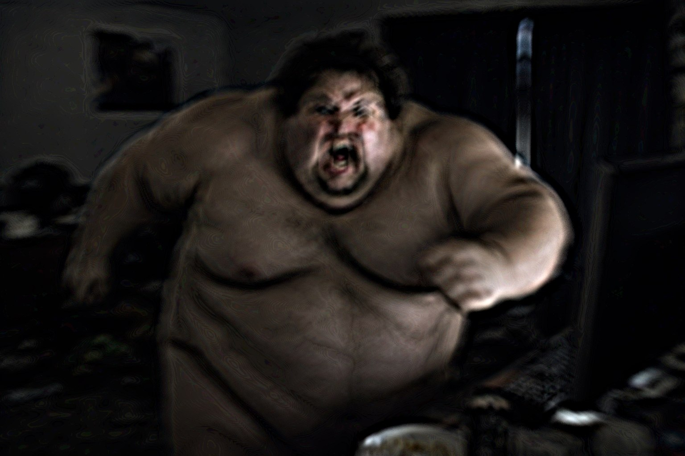
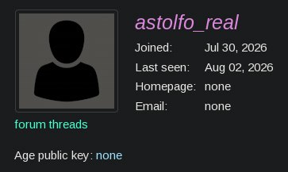

Я с доктором [ИМЯ УДАЛЕНО] заметили одно странное существо в окне одного из домов, оно было очень огромное, и очень толстое, на человеческое тело это врядли похоже, и мы решили что нам стоит начать иследовать это существо
первое что мы заметили, так это то, что существо никогда не выходит из своего дома, оно постоянно сидит у себя в комнате за компьютером
иногда существо выходит из своей комнаты что бы поесть, и еще реже выходит на улицу за новой партией бургеров
у нас не полуилось сделать нормальное фото, так как существо нас заметило и попыталось напасть, но из-за лишнего веса не смогло нас догнать

Небольшое дополнение
доктор М. "Г21" смог найти аккаунты этого существа в соц сетях
не думаю что нам это как то поможет, но тем не менне
его аккаунт в Telegram

его аккаунт в Darkforest
если у вас есть какие нибудь показания - то свяжитесь с нами в Telegram
@JirInc_Bot